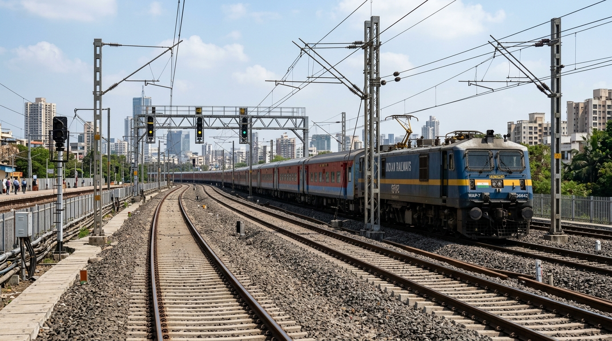
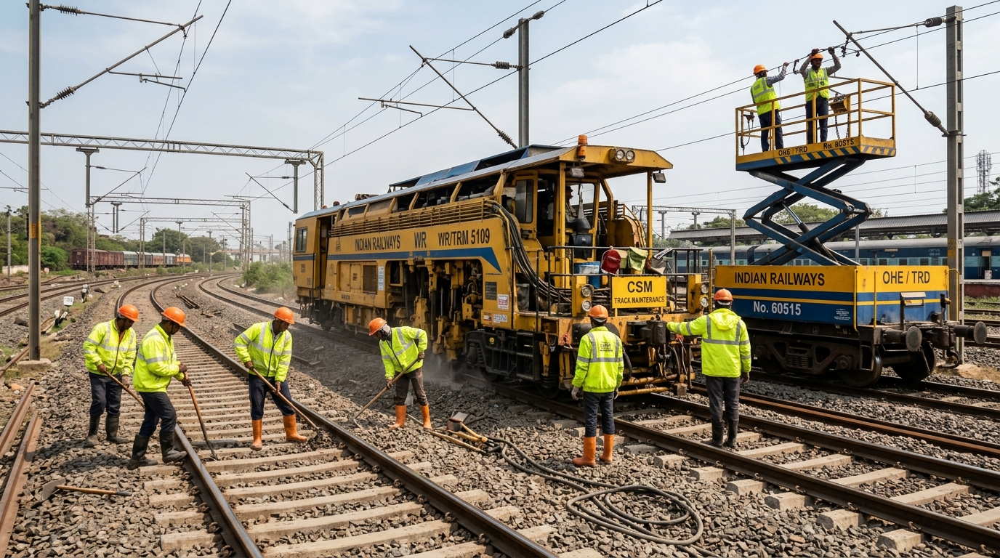

🔬 1. TMS Civil Track Cam (USFD Vision AI)
CONFIDENCE: 98.2%
IMR FLAW #804
98.2% USFD
● REC [LIVE FEED 1080p 60FPS]
KM 9/2 Dadar Up Fast
Defect Classification:
Transverse Fracture (IRPWM Ch 5)
Remediation Machine:
CSM Tamper #98 + Rail Joint Clamp
⚡ 2. Kavach TCAS Cab Speedometer & Braking Curve
BRAKE ENFORCEDCurrent Speed
68 km/h
Decelerating at 0.72 m/s²
Target TSR Limit
30 km/h
Target Distance: 420m
Emergency Braking Distance (EBD):
480 meters
Kavach Radio: 450 MHz UHF Locked
⚡ 3. TDMS Pantograph Cam & Joint Shadow Block Cam
DE-ENERGIZED
● OHE TOWER WAGON #60515 ACTIVE
25kV OHE Catenary + Track Tamping Concurrent Window
Permit to Work: PTW-TRD-0906-88
10m Buffer Active
🔊 4. RDSO Cab Alarm Synthesizer
WEB AUDIO APIAuthentic RDSO-calibrated locomotive acoustic warning chimes:
Synthesizer: Online
Auditor Workspace →